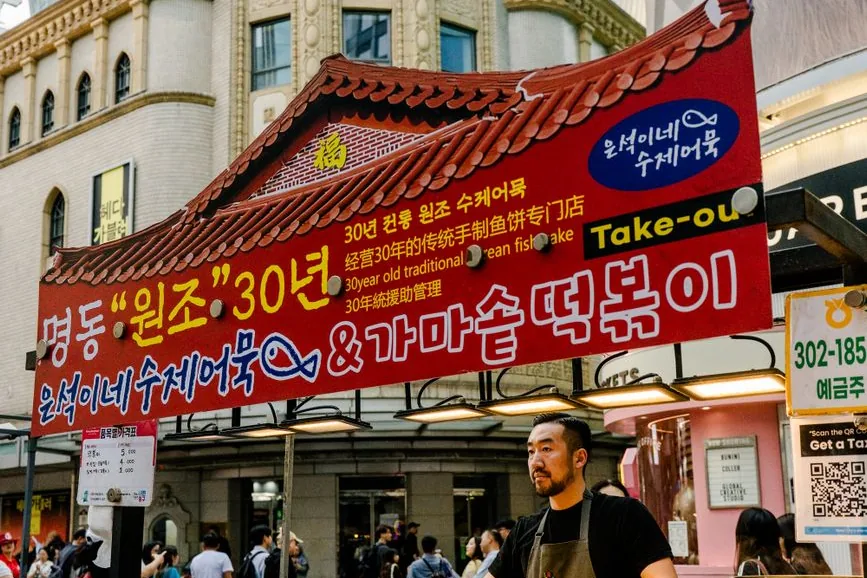

Jeju is an island where a guided bus tour genuinely earns its place. Public transport is slow between the sights, most visitors don’t drive there, and the UNESCO-listed volcanic sites are spread around the coast. So the question isn’t whether to take one — it’s which platform to book it on, and that depends on which tour you want.
| If you want… | Book on | Why |
|---|---|---|
| A small group, English-only guide | Klook | Premium small-group tours capped around 15, with English-only guiding |
| The widest choice of bus routes | KKday | The deepest list of Jeju bus tours, including Udo island |
| East / West / South day loops | Either | Both carry all three regional routes — compare the same route on both |
| A two-day combination | GetYourGuide | Multi-day East + South-West combinations are listed there |
| Hotel pickup | Klook | Pickup and multiple drop-off points are commonly built in |
The thing to check before price: shopping stops
This is the single biggest complaint about guided bus tours in Korea, and it does not appear in the headline price.
Some cheaper tours build in detours to souvenir shops, ginseng or cosmetics outlets where the operator earns commission. You pay in the currency that actually matters on a day tour: time. Forty minutes in a shop is forty minutes not at Seongsan Ilchulbong.
Klook’s premium Jeju day tours state plainly that there are no shopping stops and no optional add-ons, with entrance fees included. That is worth more than a small price difference, and it is the first line to look for on any listing regardless of platform. If a tour is unusually cheap and vague about the itinerary, assume the gap is filled with retail.
Platform by platform, for Jeju specifically
| Klook | KKday | Viator | GetYourGuide | |
|---|---|---|---|---|
| Jeju bus-tour choice | Good | Deepest (16+ listed) | Good | Good |
| Small-group option | Yes, capped ~15 | Varies | Varies | Varies |
| English-only guiding | Stated on premium tours | English guides | English guides | English guides |
| Hotel pickup | Commonly included | On some tours | Varies | On some tours |
| Entrance fees included | Stated on premium tours | Varies | Varies | Varies |
| Multi-day combinations | — | — | — | Yes |
| We can link it | Yes | Yes | No relationship | No relationship |
Klook is the pick when you care about the quality of the day: small groups, guides described as Jeju-born, English-only delivery rather than a bilingual tour where half the commentary isn’t for you, pickup from your hotel, and entrance fees folded into one price.
KKday is the pick when you want choice. It lists the most Jeju bus tours of the four, including routes the others don’t carry — the Udo island day tour being the obvious one. If your itinerary is specific, start here.
Viator and GetYourGuide both carry Jeju day tours, and GetYourGuide additionally lists two-day East + South-West combinations that the others don’t. We have no affiliate relationship with either, and are naming them anyway because a comparison that hides them would be worthless.
There is also Trazy, a Korea-specialist platform, worth knowing about if you can’t find a route on the big four.

The four questions that decide a Jeju bus tour
Price is the fifth question, not the first.
- Are there shopping stops? If the listing won’t say, treat that as a yes.
- Is the guiding English-only, or bilingual? On a bilingual tour, roughly half the commentary is for the other language group.
- Are entrance fees included? Jeju’s sites charge individually, and “tour price” sometimes means transport and guide only.
- Where does it pick up? Hotel pickup versus a single city meeting point changes your morning substantially.
Only once those four match should you compare the price of the same route across platforms.
How to book it well
Start on Klook’s Jeju day tours if you want the small-group, no-shopping version, and cross-check KKday, which lists more routes and sometimes the same tour cheaper. If you would rather explore at your own pace on the days either side, self-guided audio tours cover several Korean cities.
Two things to settle before you fly: entry, because the K-ETA waiver has an end date, and data, since tour pickup points and Kakao Map both assume you’re online — see the eSIM guidance for Korea or set one up before you go. It’s also worth comparing cover for an active island trip.
For the rest of the budget, how much a South Korea trip costs puts a day tour in proportion, and is the KORAIL Pass worth it? covers mainland rail — note it does not help on Jeju, which has no railway at all. For the platform question in general, Klook vs Viator vs GetYourGuide covers how the three differ overall.
Frequently asked questions
Is Klook or KKday better for Jeju bus tours?
Klook for the quality of the day: small groups capped around fifteen, English-only guiding, hotel pickup and entrance fees included on its premium tours. KKday for choice, since it lists the most Jeju bus tours including routes such as the Udo island day tour.
Do Jeju bus tours have shopping stops?
Some do, and it is the most common complaint about guided bus tours in Korea. Klook's premium Jeju tours state they have no shopping stops and no optional add-ons. On any platform, check that line before the price: an unusually cheap tour that is vague about its itinerary usually fills the gap with retail.
Are Jeju day tours guided in English?
Both Klook and KKday list English-guided Jeju tours, but check whether the tour is English-only or bilingual. On a bilingual tour roughly half the commentary will be delivered in another language.
Do I need a bus tour on Jeju or can I use public transport?
You can use public buses, but they are slow between the main sights and most visitors do not rent a car. A guided day tour is the usual answer for covering the UNESCO sites in a single day.
Does the KORAIL Pass cover Jeju?
No. Jeju has no railway, so the pass is irrelevant there. It applies only to mainland Korea.
Sources & further reading
- Klook and KKday Jeju day-tour and sightseeing bus-tour listings, 2026
- Viator and GetYourGuide Jeju Province bus and minivan tour categories, 2026
Tour contents, inclusions and prices change per listing and per platform. Check the specific listing before booking. This article contains affiliate links to the platforms we have a relationship with; if you book through them we may earn a commission at no extra cost to you.
Keep reading on Gently Yonder
- How Much Does a South Korea Trip Cost? A realistic 2026 budget — flights, stays, food, T-money, the KTX, and where costs surprise you.
- Do You Need a K-ETA for South Korea? (2026) 22 countries are K-ETA-exempt through 31 Dec 2026 — but you still need an arrival card. What changed, and how to prepare.
- Best eSIM for South Korea (2026) How to choose a Korea travel eSIM — coverage, data plans, and the pick for most trips.
- Is the KORAIL Pass Worth It? Passes went flexible in 2026, but a Seoul–Busan round trip is cheaper on tickets — and the pass excludes SRT, the cheaper operator.
- Klook vs Viator vs GetYourGuide Which tours-and-activities platform to use where — Asia, Europe, and global.
- Where to Book a Taipei Day Tour KKday is Taiwanese and carries the deeper inventory; Klook's north-coast listings commonly include Yehliu entry. The gap is under 5%.